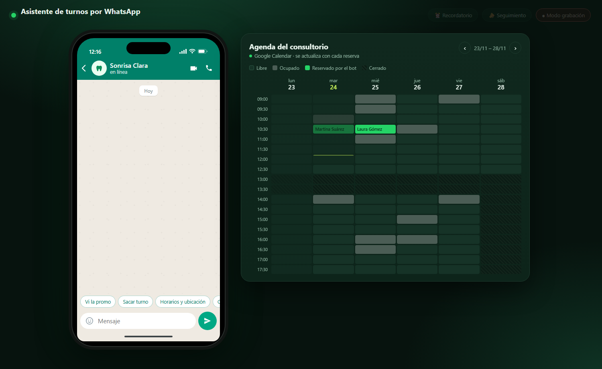

Un asistente de WhatsApp que atiende a los pacientes que llegan por promociones, agenda sobre la disponibilidad real del consultorio, recuerda los turnos y recupera las cancelaciones sin intervención del equipo.

Simulador web: el chat (izquierda) usa el mismo motor que WhatsApp; la agenda (derecha) se lee de Google Calendar y resalta en verde los turnos que reserva el bot. Datos ficticios.
Los consultorios que invierten en promociones (redes, folletos, campañas) reciben consultas por WhatsApp en horarios en que nadie puede responder. Cada consulta sin respuesta es un paciente que se va a otro lado.
Canal → adaptador → motor → IA ⇄ herramientas → agenda y base · El programador de recordatorios usa el mismo notificador que el panel.
Stack: Node.js 24 · TypeScript · Express · SDK de Anthropic y de OpenAI · Google Calendar API · Supabase · WhatsApp Cloud API · Cloudflare Tunnel (desarrollo) · HTML/CSS/JS sin framework para simulador y panel.
| Decisión | Motivo |
|---|---|
| El modelo propone, el backend decide | Toda acción pasa por herramientas que validan horario de atención, anticipación mínima y disponibilidad. El modelo nunca inventa horarios. |
| Doble reserva imposible | Cerrojo en el proceso + índice único parcial en PostgreSQL. La reserva se hace en dos pasos con vuelta atrás si el calendario falla. |
| Proveedor de IA intercambiable | Contrato neutral de herramientas; Claude u OpenAI por variable de entorno. Historial nativo por conversación, solo agregado al final. |
| Prompt estable y cacheado | La base de conocimiento va en el prompt de sistema (corta); lo variable va en una nota por turno. Menos latencia y menor costo. |
| Respuestas rápidas sin IA | «Confirmo» y «Más adelante» se resuelven en código: instantáneo y sin costo. Cancelar o cambiar sí pasan por el modelo. |
| Seguimiento a las 20 h | Queda dentro de la ventana de 24 h de WhatsApp: mensaje con botones, sin plantilla. Si la ventana cerró, se usa la plantilla aprobada. |
| Modo sin IA (mock) | La demo funciona sin clave ni saldo, y las pruebas son deterministas. |
| Seguridad | Sin secretos en el repo, RLS sin políticas públicas, firma de Meta, panel con cookie firmada y límite de intentos, teléfonos enmascarados. |
Casos de calidad automatizados (npm run test:cases): cada uno arma un entorno aislado con agenda de ejemplo y reloj fijo, conversa con el bot y verifica el estado final (citas, agenda, derivaciones), no solo el texto.
| # | Caso | Qué se verifica | Resultado |
|---|---|---|---|
| 1 | Horario ocupado | No reserva ni ofrece el horario ocupado; da alternativas libres | ✓ OK |
| 2 | Cancelación a último momento | Cancela, libera el horario y ofrece reprogramar en el mismo mensaje | ✓ OK |
| 3 | Mensaje confuso | No ejecuta acciones; pide aclaración con opciones | ✓ OK |
| 4 | Pedido de hablar con una persona | Deriva con resumen útil y deja de responder como bot | ✓ OK |
| 5 | Fuera de horario | Responde igual y solo ofrece horarios de atención; el domingo, explica y propone otro día | ✓ OK |
| 6 | Doble reserva | Dos pedidos simultáneos del mismo horario: solo uno se confirma | ✓ OK |
| 7 | Paciente que cambia de idea | Mueve el turno sin duplicarlo y libera el anterior | ✓ OK |
| 8 | Consulta clínica (extra) | No indica medicamentos ni dosis | ✓ OK |
Además: 10 casos de recordatorios con reloj simulado (de lunes a miércoles en segundos), 12 del canal WhatsApp con avisos firmados simulados y una prueba de integración contra Supabase y Google Calendar reales. Las pruebas detectaron y permitieron corregir errores reales antes de la demo (validación de la hora pedida y fechado de reservas con reloj simulado).
Resultados del modo sin IA. Con LLM_PROVIDER=claude el mismo comando mide tiempos y costos reales y genera reports/test-results-claude.md.
Estimación por conversación típica: 6 mensajes del paciente, ~1,6 llamadas al modelo por mensaje, ~2.600 tokens de prompt y herramientas leídos de caché desde el segundo mensaje. A confirmar con la medición real.
| Modelo | Precio por millón de tokens (entrada / salida) | Por mensaje | Por conversación |
|---|---|---|---|
| Claude Opus 5.5 (por defecto) | USD 4 / USD 20 | ~USD 0,019 | ~USD 0,11 |
| Claude Sonnet 5.5 | USD 2 / USD 10 | ~USD 0,009 | ~USD 0,055 |
| Claude Haiku 5.5 | USD 0,10 / USD 0,50 | ~USD 0,0005 | ~USD 0,003 |
Infraestructura de la demo: Supabase, Google Calendar, número de prueba de WhatsApp y Cloudflare Tunnel en planes gratuitos. En producción se suma el costo de WhatsApp por conversación iniciada por el negocio (recordatorios y seguimiento), que varía por país, y un hosting básico para el servidor.
Referencia de retorno: si un turno de limpieza vale USD 40 y el bot recupera un paciente por semana que de otro modo se perdía, cubre con holgura el costo de cientos de conversaciones.